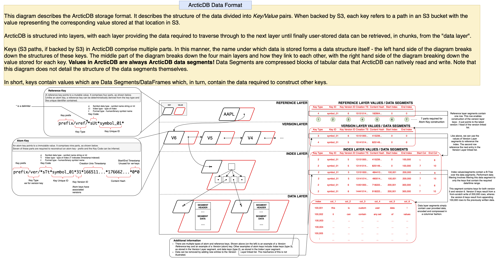

ArcticDB On-Disk Storage Format¶
ArcticDB uses a custom storage format that differs from Parquet, HDF5 or other similar well-known columnar storage formats. This page provides a high-level description of this format.
The ArcticDB storage engine is designed to work with any key-value storage backend and currently has full optimised support for the following backends:
- S3
- LMDB
The structure of the stored data is optimised for that storage - for example, when using S3 all related paths (or keys) share a common prefix to optimise for ListObjects calls.
Despite this storage specific optimisation, the hierarchy and segment format remain identical regardless of the backend storage. These components are described below.
Structural overview¶

The above diagram provides an overview of this format, illustrating how ArcticDB manages the symbol metadata, version history and index layout of the data it stores. Not shown is the binary format used to store ArcticDB segments.
Note
Please note that the key formatting illustrated on the left hand side of the above diagram is specific to S3. The formatting may differ depending on the underlying storage and as such the key paths might not match when using another storage engine such as LMDB.
The ArcticDB storage format is comprised of 4 layers; the Reference Layer, the Version Layer, the Index Layer and finally, the Data Layer. For a full definition of a key, please see the above diagram.
Reference Layer¶
The reference layer maintains an active pointer to the head of the version layer linked list, which enables fast retrieval of the latest version of a symbol. This pointer is stored in the Data Segment as illustrated in the above diagram. As a result, the reference layer is the only mutable part of ArcticDB's storage format with the value of each reference-layer-key able to be overwritten (hence using a Reference Key, rather than an Atom Key)
The reference layer primarily stores keys of type Version Reference, as documented below.
Version Layer¶
The version layer contains a linked list of immutable atom keys/values. Each element of the linked list contains two pointers in the data segment; one points to the next entry in the linked list, and the other points to an index key, providing a route through to the index layer of the storage structure. As a result, traversing the version layer linked list for a symbol allows you to travel backwards through time to retrieve data as it were at a previous version/point in time. The version layer also contains information about which versions have been deleted, and which are still "live".
This means that for symbols with a lot of versions, this linked list can get quite long, and so reading old versions (using the as_of argument) can become slower as lots of tiny object reads are required in order to find the relevant index key. A method will soon be added to the Library API allowing users to "compact" this linked list into a few larger objects.
The version layer primarily stores keys of type Version, as documented below.
Index Layer¶
The index layer is an immutable layer that provides a B-Tree index over the data layer. Much like the reference and version layer, this utilises data segments containing data pointers. Each pointer is simply a key that that contains a data segment.
For more information on the data stored in this layer, see the Structural Overview diagram.
The index layer primarily stores keys of type Table Index, as documented below.
Data Layer¶
The data layer is an immutable layer that contains compressed data segments. Dataframes provided by the user are sliced by both columns and rows, in order to facilitate rapid date-range and column searching during read operations. See the documentation for the rows_per_segment and columns_per_segment library configuration options for more details.
The data layer primarily stores keys of type Table Data, as documented below.
ArcticDB Key Types¶
What is an ArcticDB key?¶
ArcticDB stores data in either LMDB or object storage (S3). Regardless of the backend though, ArcticDB stores data in well-defined key types where a key type defines the purpose of the associated value and the structure of the name/path of the key. Examples of how the paths differ for S3 are shown below.
Note that where this documentation refers to a Key Type key (for example a version reference key), it refers to both the S3/LMDB key and the associated S3/LMDB value.
Key Types¶
| Key Type | Atom/Reference | S3 Prefix | Purpose |
|---|---|---|---|
| Version Reference | Reference | vref | Maintains the top level pointer to the latest version of a symbol |
| Version | Atom | ver | Maintains pointers to index keys for one or more versions of a symbol |
| Table Index | Atom | tindex | Maintains an index structure over the data |
| Table Data | Atom | tdata | Maintains the data for a table |
| Symbol List | Atom | sl | Caches symbol addition/removals |
Note that Atom keys are immutable. Reference keys are not immutable and therefore the associated value can be updated.
Version Ref
In this documentation, Version Reference key is sometimes shortened to Version Ref key.
Example paths¶
The paths below are examples of S3-based paths. LMDB ArcticDB libraries may have slightly different paths.
| Key Type | Example Path |
|---|---|
| Version Ref | {bucket}/{library prefix}/{library storage id}/vref/sUtMYSYMBOL |
| Symbol List | {bucket}/{library prefix}/{library storage id}/*sSt*__add__*6*1632469542244313925*8986477046003934300*ORJDSG8GU4_6*ORJDSG8GU4_6 |
Additional Information¶
Data Layer Fragmentation¶
As the example given in the Structural Overview diagram demonstrates, Atom Keys in the data layer from older versions are re-used (i.e. pointed to) by the new version's index layer if the data in them is still needed. This is always trivially true for append operations, and this is conceptually simpler, so the example we will work with here is based on append. It is worth noting that all of the same arguments also apply to update as well though.
By re-using data layer keys from the previous version, calls to append are as efficient as possible, as they do not need to read any of the data layer keys from the previous version. However, this can result in the data layer becoming fragmented, in the sense that data in the data layer is spread over a lot of small objects in storage, and this can have a negative performance impact on read operations.
Consider a use case where a symbol with 10 columns, all of 8 byte numeric types, is appended to once per minute. This means that each day, 1,440 data layer segments are written, each with just 80 bytes of information in. Calling read for a days worth of data therefore requires 1,440 reads of these tiny data layer objects, which will be much less efficient than reading a single object of 115,200 bytes.
We will soon be adding an API to perform exactly this operation, re-slicing data such that subsequent reads can be as efficient as possible, without harming the efficiency of existing append or update operations.
Symbol List Caching¶
Speeding up listing symbols
The below documentation details the architecture for the symbol list cache.
It explains that to speed up list_symbols, simply run list_symbols through to completion frequently.
The cache is built on first run and compacted afterwards.
This will speed up list_symbols for all accessors of the library - not just the user that runs list_symbols.
list_symbols is a common operation to perform on an ArcticDB library. As this returns a list of "live" symbols (those for which at least one version has not been deleted), using the data structures described above, this involves:
- Loading a list of version reference keys in the library.
- For each version reference key:
- Traverse the version key linked-list until either a live version is found, or it is established that all versions have been deleted.
For many libraries, these operations will be quick enough. However, if there are millions of symbols, or if the first live version to be found for symbols is very far back in the version key linked-list, then this method can be prohibitively expensive.
Therefore, ArcticDB maintains a cache of live symbols, such that the list_symbols call should always return quickly. This works by writing special atom keys into the storage that track when symbols are created or deleted, and the time that the operation happened. These Symbol List atom keys are of the form:
<library prefix>/sl/*sSt*__add__*0*<timestamp 1>*<content hash>*<symbol name>*<symbol name>- signifies that<symbol name>was created at<timestamp 1><library prefix>/sl/*sSt*__delete__*0*<timestamp 2>*<content hash>*<symbol name>*<symbol name>- signifies that<symbol name>was deleted at<timestamp 2>
The operation to list symbols then involves:
- Read all of the symbol list atom keys for the library (this resolves to a
ListObjectscall with S3 storage). - Separate the keys by the symbol they refer to being created/deleted.
- For each symbol:
- Check if the most recent operation was a creation or a deletion.
Symbols for which the latest operation is a creation are then returned to the caller of list_symbols.
Without any housekeeping, this process could lead to unbounded growth in the number of symbol list atom keys in the library. Even worse, many of these keys would contain redundant information, as we only care about the latest operation for each symbol. Therefore, whenever list_symbols is called by a client with write permissions on the library, if there are too many (500 by default, see the Runtime Configuration page for details on how to configure) symbol list atom keys, all of the information from these keys is compacted into a single symbol list atom key, and the old keys are deleted. For example, if there were 4 symbol list atom keys:
<library prefix>/sl/*sSt*__add__*0*t0*<content hash>*symbol1*symbol1Create "symbol1" at t0<library prefix>/sl/*sSt*__delete__*0*t1*<content hash>*symbol1*symbol1Delete "symbol1" at t1<library prefix>/sl/*sSt*__add__*0*t2*<content hash>*symbol12*symbol2Create "symbol2" at t2<library prefix>/sl/*sSt*__add__*0*t3*<content hash>*symbol1*symbol1Create "symbol1" at t3
They would be compacted into a single object stating that "symbol1" and "symbol2" were both alive at time t3. The key for this object is of the form <library prefix>/sl/*sSt*__symbols__*0*t3*<content hash>*0*0.
Astute observers will correctly take issue with basing logical decisions on timestamps in a purely client-side database with no synchronisation between clocks of different clients enforced. As such, this cache can diverge from reality, if two different clients create and delete the same symbol at about the same time, and this is the most likely cause of odd behaviour such as lib.read(symbol) working, but symbol in lib.list_symbols() returning False. If this happens, lib.reload_symbol_list() should resolve the issue.